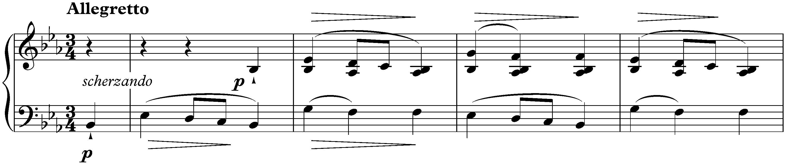

II. Menuetto: Allegretto · Sonat No. 1 Opus 4, Do Minör
1828 · Chomiński 201 · Brown 23
Henle Zorluk Seviyesi: -
Süre: 4'


Sonatlar, hem müzikal hem de teknik olarak Chopin'in en zor piyano besteleri arasında sayılıyorlar. Chopin'in stil değişikliklerini yansıtan 1828'den 1844'e kadar bir zaman diliminde yazılmışlardır.